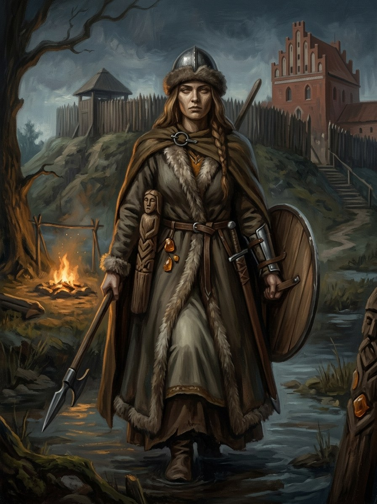

Jūratė¶
Tautosakos šaltiniai [Istoriniai duomenys]¶
Jūratė (from jūra, „sea“) is the queen of the amber palace under the Baltic. She is not attested as a goddess in any medieval or early-modern list. The legend of Jūratė and the fisherman Kastytis was first written by Liudvikas Adomas Jucevičius in 1842 and made famous by Maironis’s 1920 poem. Perkūnas, enraged that a goddess loved a mortal, shatters her amber castle and kills Kastytis, or chains her to the ruins; the amber washed up after storms is her palace, and the sea’s moan is her grief. Scholars generally read the tale as literary-romantic, assembled from folk amber lore, and Polish tradition knows a „Jurata“ on the Hel peninsula. Amber itself is ancient: Tacitus (Germania 45) says the Aestii gathered it, and the Order later monopolised the Prussian trade.
The saga keeps it as folklore of the 19th century and lets it circulate orally in 1382 (a deliberate anachronism, see the legends).
Jūratė

Jūratė · god¶
Tipas |
dievybė |
Pastaba |
Goddess of the Baltic Sea; queen of the amber palace beneath the waves. |
Sagoje¶
Domain: the sea’s amber court and grief. Element: none. Force-face: the Amber Queen, an office born of her grief and first held by her, later passed to a vessel, finally Birutė. She feuds with Perkūnas, who shattered her palace, and the feud is unfinished, which is why he marks Birutė’s son. Her drowned court survives as the sea-maidens (vandenis).
In the books: in Book III ch. 14 the Queen’s voice says, „the sea remembers all that gods and men broke; Perkūnas won against my palace“. In Book IV ch. 8 a Vilnius bishop’s letter orders „the idol they call Jūratė“ removed, meaning the amber kneeling woman. In Book VI ch. 10 the young Birutė tells Kęstutis the tale and he judges, „Perkūnas acted like a prince“. Weakness: she is chained to the ruins, and a god who loves a mortal steals a death from Laima and Giltinė.
Aukos ir draudimai¶
Amber taken from the shore after a storm without an offering goes cold; wall-amber from the Šventoji mouth is too dangerous to work, since it remembers the palace. The law: dievai nemyli mirtingųjų, gods do not love the dying.
Tarimas¶
YOO-rah-tay (IPA [ˈjuːrɐtʲeː]), stress JŪ-ra-tė. Kastytis: kahs-TEE-tis.
Ryšiai
Feud with: Perkūnas
Force-faces: Gintaro Karalienė (Amber Queen) — An office born of Jūratė’s grief; needs vessels.
Servants: Vandenis and undinės (lake-keepers) — Sea-maidens are the remnants of her drowned court.
Vessel of: Gintaro Karalienė (Amber Queen) — First holder of the office (mythic).
Domain The sea's amber court, and its grief
Layer God (Layer I, mythic) · first holder of the Force-office Gintaro Karalienė
Force-face The Amber Queen, an office of grief and memory
Offerings An offering whenever amber is taken after a storm; a ring given to the water. Wall-amber from the Šventoji mouth is too dangerous to work, since it remembers the palace
Taboos Dievai nemyli mirtingųjų: gods do not love the dying
Signs The sea's moaning in a storm; amber on the Palanga shore after a storm; the Queen's surf-whisper through amber
Through the Queen. She speaks only as the Amber Queen, only through amber.
Her court. Her drowned court survives as the sea-maidens.
The dead. She cannot raise Kastytis. The Queen only keeps the dead, in memory and in amber.
Freedom. She is chained to the ruins of her palace by Perkūnas.
A stolen death. A god who loves a mortal steals a death from Laima and Giltinė. Each vessel of her office pays it back with her mortality, a little in each generation.
Birutė. The last vessel paid the remainder at Palanga in 1384.
Sąsajos¶
graph LR
amber_queen["Gintaro Karalienė (Amber Queen)"]
jurate["Jūratė"]
perkunas["Perkūnas"]
vandenis["Vandenis and undinės (lake-keepers)"]
jurate -->|Vessel of| amber_queen
amber_queen -->|Force-face of| jurate
perkunas -->|Feud with| jurate
vandenis -->|Servant of| jurate
style jurate stroke-width:3px